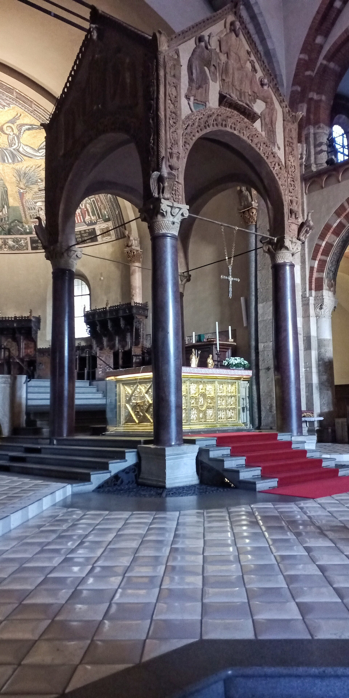
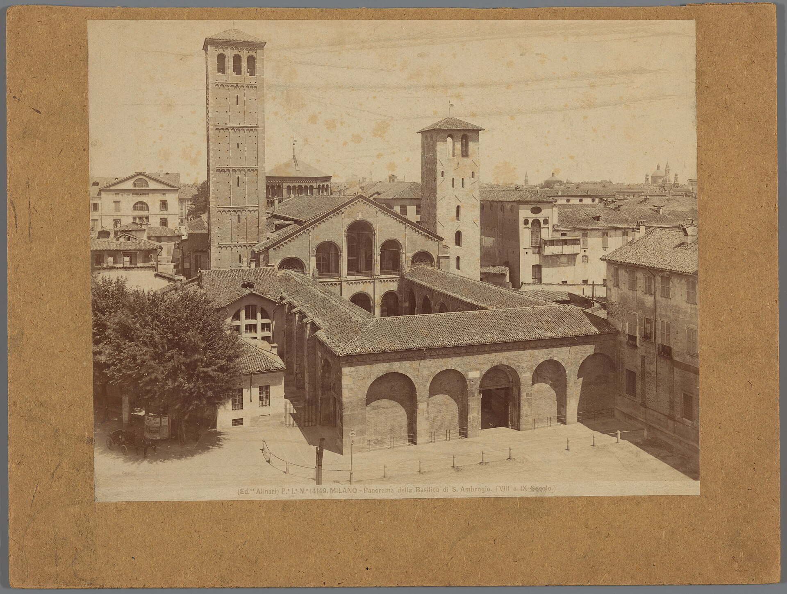

米兰守护圣人安布罗斯（340-397）亲手奠基的教堂，现存主体为 11-12 世纪重建的伦巴第罗马式：砖砌双塔、前庭柱廊（柱子拆自古罗马建筑）。主祭坛下的地宫同时安葬着圣安布罗斯与两位殉道者--欧洲“圣体在上、圣徒在下”布局的原型。
看点路线
Il Percorso
- 1前庭柱廊：罗马柱与中世纪砖塔的混搭
- 2主祭坛后的金色祭坛 Altare d'Oro（9 世纪）
- 3地宫：圣安布罗斯玻璃石棺与殉道者遗骨
- 4蛇柱：古代青铜柱的传说
- 510 月有个隐藏福利：这座教堂是米兰“宪法日”仪式的重要场地
重点看点
La Basilica · 5 个千年细节

金色祭坛
主祭坛后的鎏金铜板祭坛：宝石、珐琅与浮雕讲述基督生平，顶端的十字架传说嵌有真十字架残片。加洛林王朝金工的巅峰之作--1200 年来几乎未离开过这个位置。
圣安布罗斯墓与地宫
主祭坛正下方的地宫里，三具石棺并排：中间是安布罗斯本尊（银面玻璃棺可见遗骨），两侧是殉道者格瓦西乌斯与普罗塔西乌斯。395 年他下葬时“圣徒抬着他自己的葬礼”--这是他生前布道的说法，也是西方圣髑崇拜制度的起点之一。
蛇柱
前庭的青铜蟠龙柱，相传是安布罗斯从君士坦丁堡带回（原型是德尔斐/君士坦丁堡广场的蛇柱）。米兰谚语："当蛇开始喝水，米兰就要陷落"--它至今没喝，请放心。
前庭与罗马柱
四边柱廊的许多石柱花纹各异--它们是 4-11 世纪的米兰人从罗马废城里拆来“废物利用”的。中世纪不是“黑暗时代”，而是“回收时代”：这座城市把古典世界拆成了自己的骨架。

双塔不对称
右侧修士塔（9 世纪）矮、左侧主教塔（12 世纪）高--两塔分属教区与修道院两个权力主体。罗马式教堂的“不对称”是制度史的化石：同一屋檐下，两个平行的权力系统各盖各的塔。
历史故事
Le Storie
壹让皇帝公开忏悔的人
390 年，塞萨洛尼基市民暴动杀了罗马军官，皇帝狄奥多西一世下令报复性屠城，约七千人丧生。米兰主教安布罗斯闻讯，直接给皇帝写信：你不忏悔，就别来领圣餐。
皇帝起初搬出大卫王的先例辩解，安布罗斯回信：你读过大卫犯罪，也应读过他被先知当面斥责。数月僵持后，狄奥多西脱下紫袍、以忏悔者身份在教堂外苦修四十天，才被重新接纳。
这段“米兰对峙”确立了中世纪政教关系的基调：皇帝也需在教会面前负责。你脚下的地面，见证过西方宪制史的一个原点。
贰“抓阄”当上的主教
374 年，米兰主教之争引发骚乱，时任总督的安布罗斯到场维持秩序。传说一个孩子喊了句“安布罗斯当主教！”，人群如获圣谕--而他此时甚至还没受洗。
他一周内完成受洗-授职全套流程，就任主教，随后把家产分给穷人、专心当起了“职业主教”。他与奥古斯丁、哲罗姆、格里高利并称拉丁四大圣师。
奥古斯丁的《忏悔录》里，那位让他在米兰花园里顿悟的声音，就来自安布罗斯的讲道。
叁蛇柱的谚语
前庭的青铜蟠龙柱，相传是安布罗斯从君士坦丁堡带回（原型是更古老的德尔斐/君士坦丁堡广场蛇柱）。
米兰谚语："当蛇开始喝水，米兰就要陷落"--它至今没喝，请放心。中世纪的米兰人用一句谚语给城市买了永久的心理保险。
柱身青铜被摸得发亮：考生与生意人路过都会摸一下--“通关”与“回本”的护身符。
肆金色祭坛的九个世纪
主祭坛后的金色祭坛（Altare d'Oro，9 世纪，金匠沃尔维尼奥作）：鎏金铜板与珐琅讲基督生平，顶端的十字架传说嵌有真十字架残片。
它的正面与背面分别面向信徒与圣髑室--中世纪工匠在“两个观众席”各讲了一个版本的故事。
投币亮灯后细看珐琅的脸部：加洛林王朝金工的巅峰，1200 年几乎未离开过这个位置。
伍地宫里的三个人
主祭坛正下方的地宫，三具石棺并排：中间是安布罗斯本尊（银面玻璃棺可见遗骨），两侧是殉道者格瓦西乌斯与普罗塔西乌斯。
386 年两位殉道者的遗骨被发现时，安布罗斯宣布“圣徒自己选择了位置”--由此确立的“圣体在上、圣徒在下”布局，被全欧洲教堂复制了一千年。
395 年安布罗斯下葬于此：教堂因他而建、他也最终住进了自己的作品--建筑史上最完整的“作者签名”。
陆双塔的不对称
右侧修士塔（9 世纪）矮、左侧主教塔（12 世纪）高--两塔分属修道院与教区两个权力主体。
中世纪教堂的“不对称”是制度史的化石：同一屋檐下，两个平行的权力系统各盖各的塔。谁也说不服谁，就各自长高。
广场上找正对双塔的位置：一高一矮的剪影是罗马式建筑最上镜的“权力肖像”。
柒《米兰敕令》的城市
313 年，君士坦丁与李锡尼在米兰达成协议（后称《米兰敕令》），帝国境内宗教宽容--基督教从此走出地下。
米兰因此成为“帝国的良心首都”：皇帝宫廷、安布罗斯的讲坛与奥古斯丁的皈依都在这里发生。教堂前庭的罗马柱子，很多就来自那时的帝国建筑。
摸一摸柱廊里那些花纹各异的罗马柱：中世纪的米兰人把古典世界拆成了自己的骨架--“回收时代”这个词，说的是它们。
捌奥古斯丁的受洗
387 年复活节夜，奥古斯丁与儿子阿德奥达图斯在米兰受洗--主持者正是安布罗斯。那时的奥古斯丁是修辞学教师，正在写《忏悔录》里最挣扎的那几卷。
受洗的地点在老 cathedral（今教堂地下考古区可见其洗礼池残迹）--“米兰的夜”因此成了西方思想史的坐标。
安布罗斯与奥古斯丁的组合：一位行政官出身的主教，点化了一位浪子哲学家--教会史上最重要的师徒档。
玖圣安布罗斯节：米兰的“文化新年”
12 月 7 日圣安布罗斯节是米兰的法定城市节日--银行关门、学校停课，斯卡拉歌剧院的新演出季也在这一晚开幕。
传统仪式包括教堂弥撒与市中心的游行；本地家庭的习惯是把圣诞树留到这天之后才买--“圣安布罗斯之前不算圣诞季”。
如果你的行程含 12 月初的米兰：这一晚的教堂与斯卡拉门口，是全城一年中最“米兰”的时刻。
拾安布罗斯仪轨的拉丁弥撒
米兰教区至今保留自己的礼仪（rito ambrosiano）--与罗马仪轨在经文、圣歌与仪式细节上都不同，历史可溯至安布罗斯时代。
某些周日与节日的拉丁弥撒仍用安布罗斯圣咏演唱--那种“五世纪的声音”在砖拱下的回响，是欧洲活着的最早教堂音乐传统之一。
进殿先看告示：遇上仪式请安静观礼--你不是在参观博物馆，是顺路拜访了一千六百年没下班的办公室。
参观贴士
Consigli Pratici
- 周日午后部分区域关闭，参观首选工作日上午
- 金色祭坛与地宫的照明需投币或小额门票，备 €0.50-1 硬币/门票
- 着装要求：不露肩不过膝
- 地铁 M2 Sant'Ambrogio 站出口正对教堂前庭，动线极顺
- 与感恩教堂（《最后的晚餐》）相距步行 10 分钟，可同半天串联
- 12 月 7 日圣安布罗斯节是米兰本地节日（城市守护圣人日），教堂有特别仪式--歌剧季斯卡拉开幕也定在这天，是米兰的“文化新年”
顺路同游
Da Non Perdere